Tờ hướng dẫn K1 (mảnh gốc phóng to: chỉ lấy hình bóng)
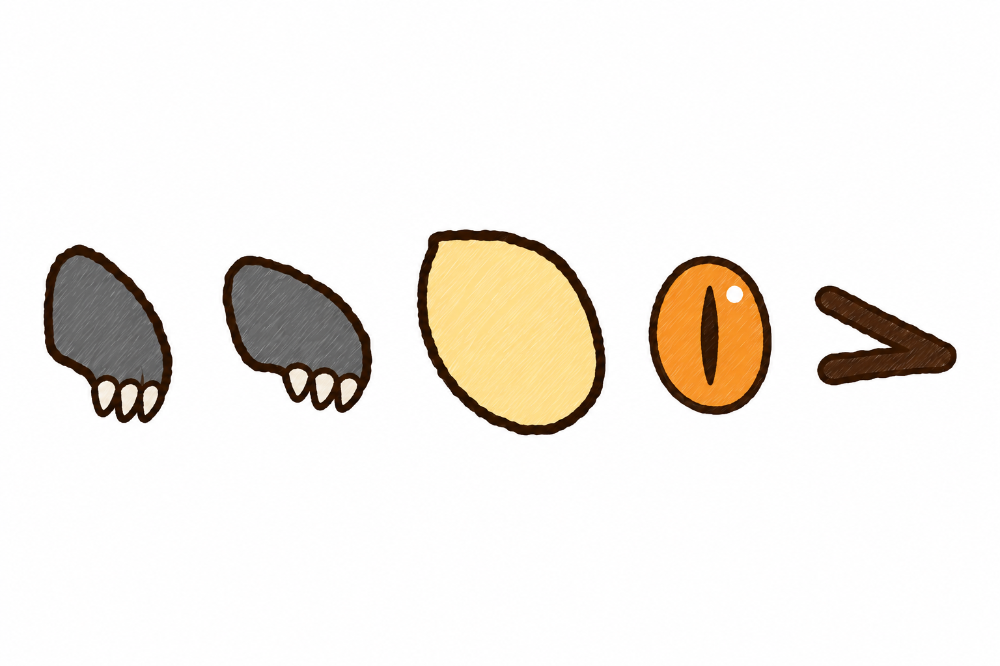
Tờ K2 (hai tay có vuốt, lòng mắt, tròng đồng tử dọc, mắt nhắm)
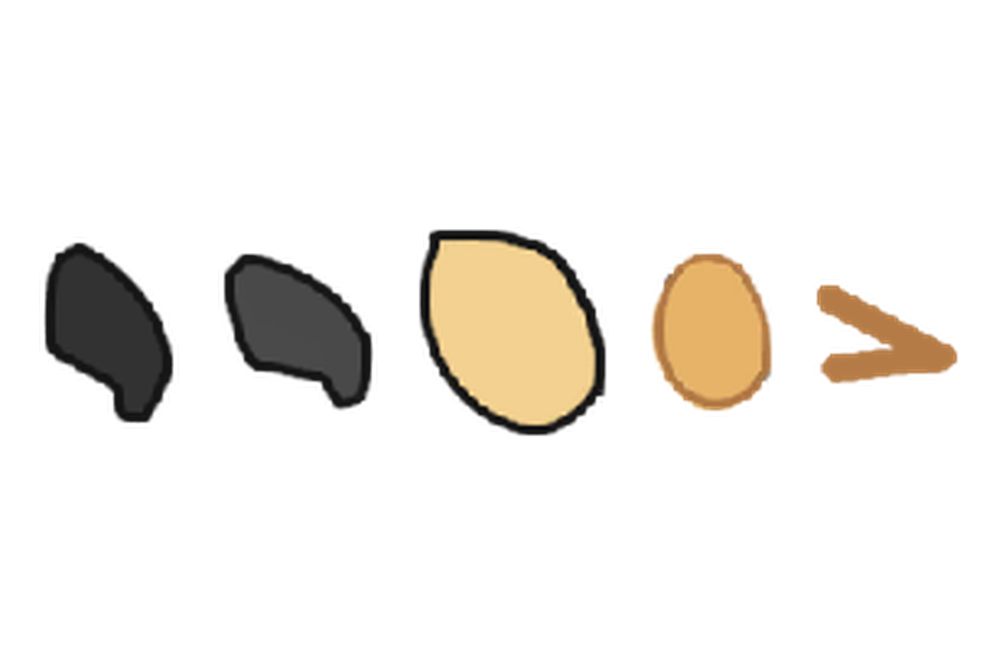
Tờ hướng dẫn K2
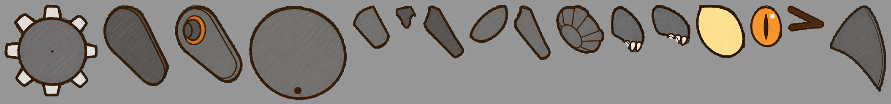
15 mảnh K đã cắt, nền xám (mỗi mảnh đúng khung ảnh vùng × 2)
Lượt 3 (đã chọn D3)
Mỗi kiểu có hai bản (Codex vẽ hai lần). Viền đỏ = bản D, viền lam = con gốc. Khớp hình bóng với con gốc giảm từ 0,92 (D) xuống 0,89–0,90.
D3 (Claude đề xuất) mai ba đốt giáp + sừng móc + mõm ngắn có nanh; gờ mày có khấc nhíu rõ nhất, mặt "chiến" nhất. Lỗi nhỏ: hai vằn gỉ thành hai ô vuông, chưa xéo
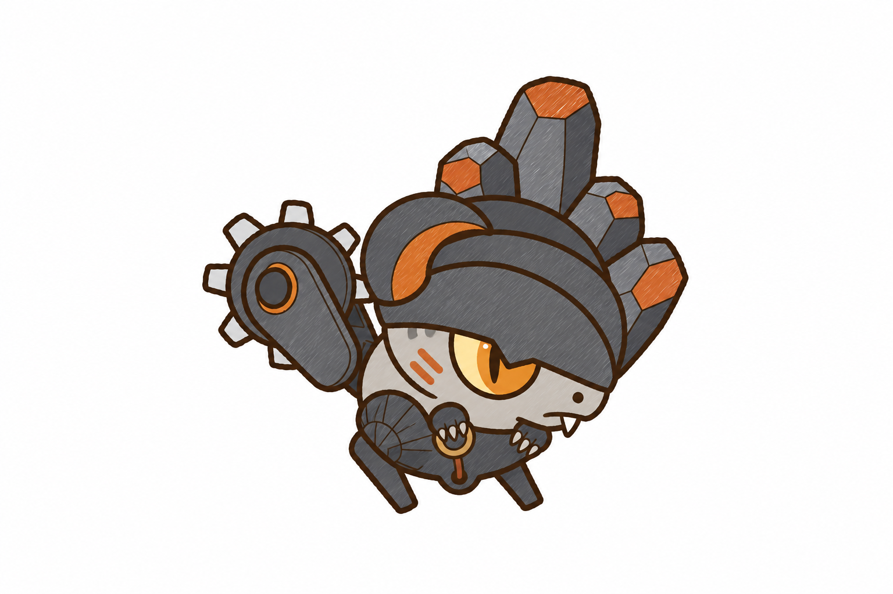
D3_2 như D3, mai bốn đốt tròn như mũ len; còn sót hai vạch xám của vằn cũ trên trán
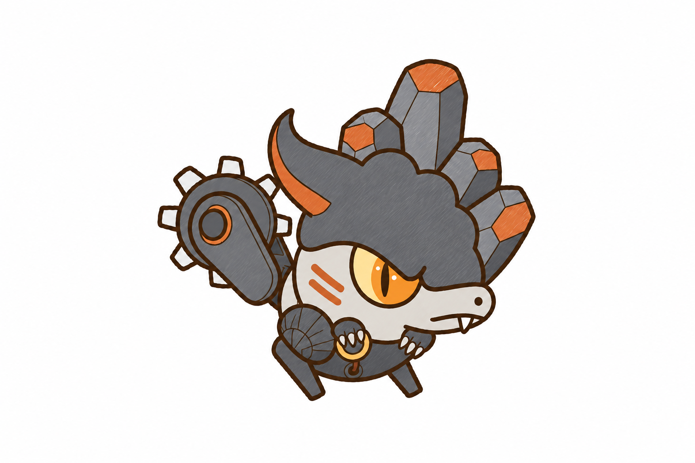
D2_2 giữ mai, sừng của D; mõm dài kiểu thằn lằn, miệng mím, nanh, gờ mày có khấc; vằn xéo đúng
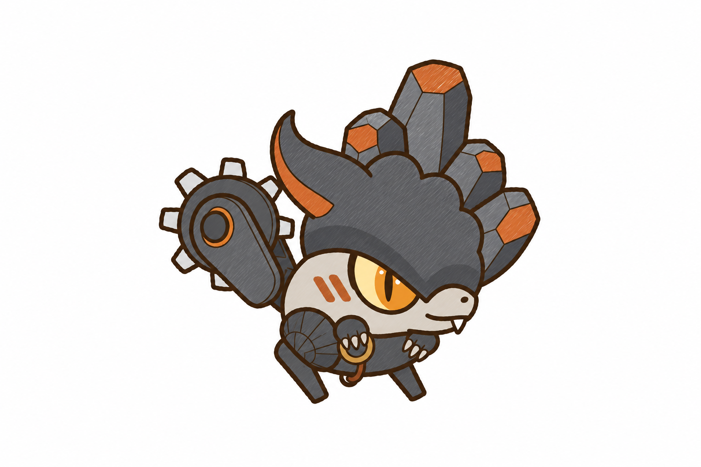
D2 giữ mai của D (có thêm một dải xám sẫm hơn dưới mép mai); mõm tròn nhỏ, miệng cong lên như đang cười, không thấy khấc mày
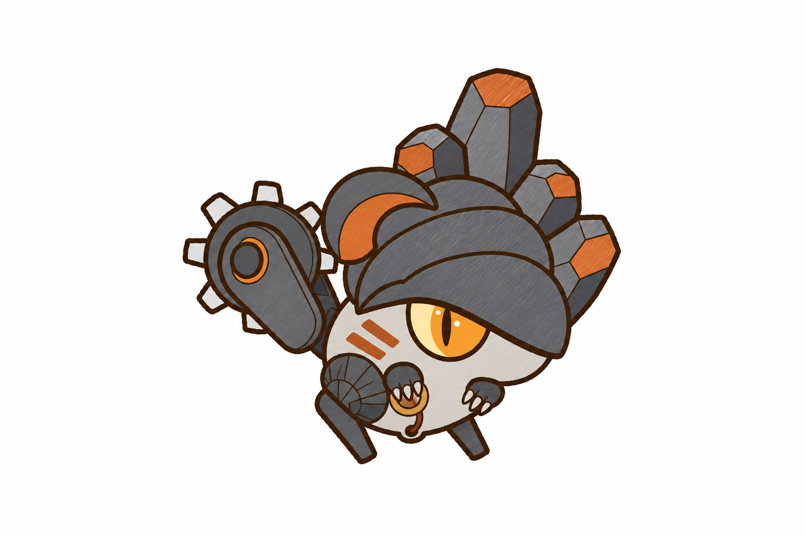
D1 mai ba đốt giáp, sừng móc, mặt không mõm; má tròn, vẻ hiền hơn
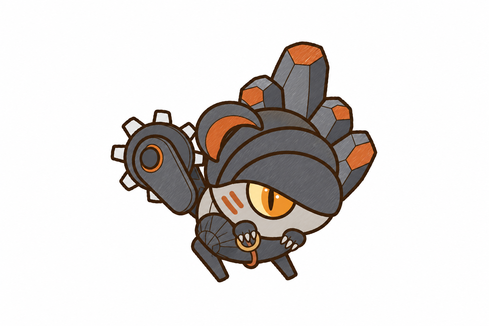
D1_2 như D1, vằn xéo; còn vệt mờ của mai cũ ở đỉnh đầu
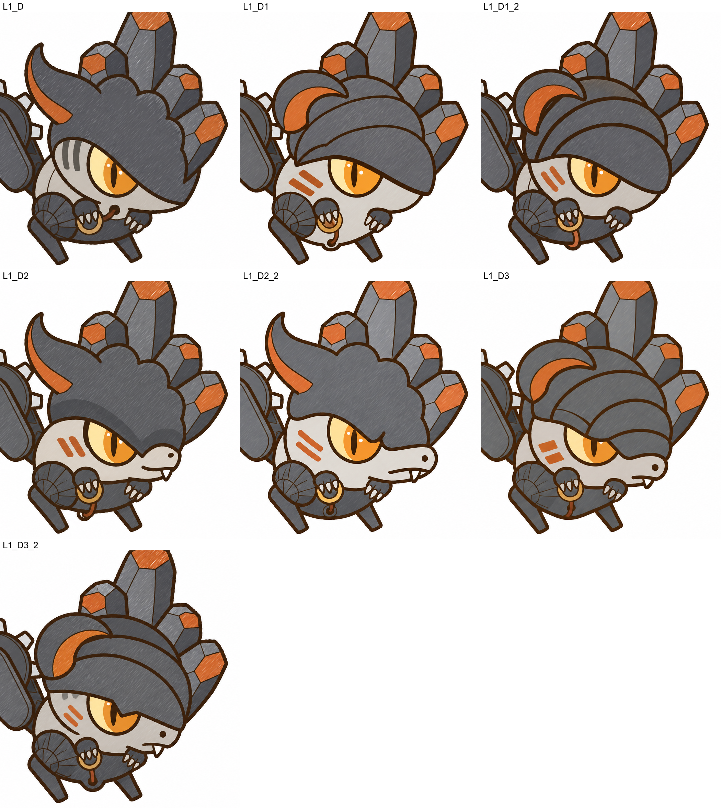
Cận đầu: D gốc và sáu bản mới
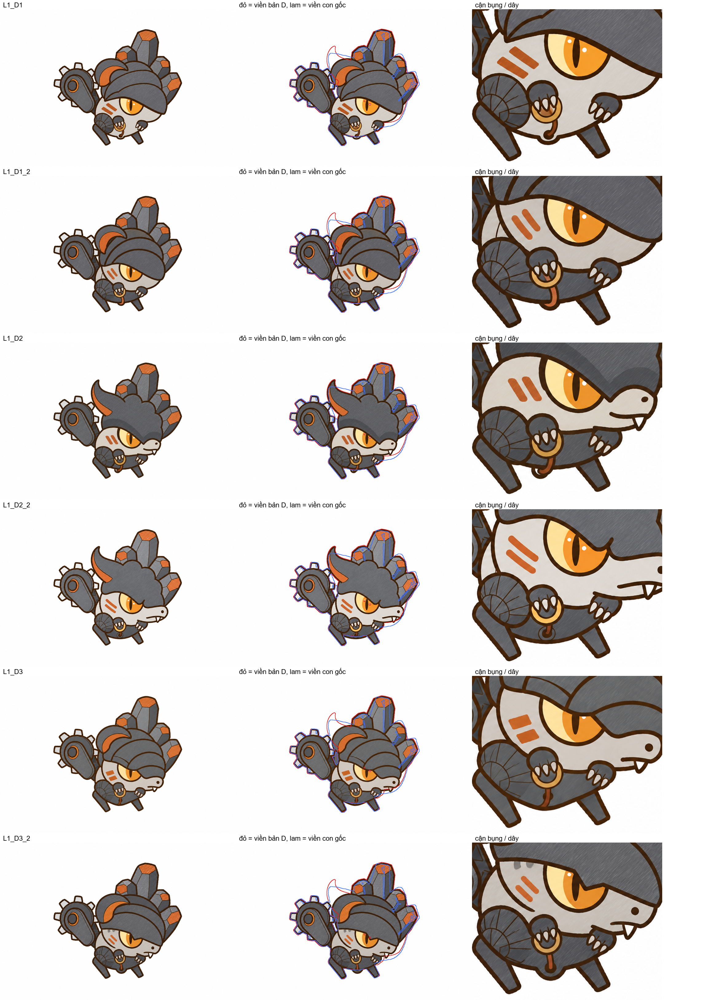
Chồng viền (đỏ = D, lam = con gốc) và cận dây giật: cả sáu bản đều đã dời lỗ dây xuống thấp giữa hai chân
Lượt 2 (đã chọn D)
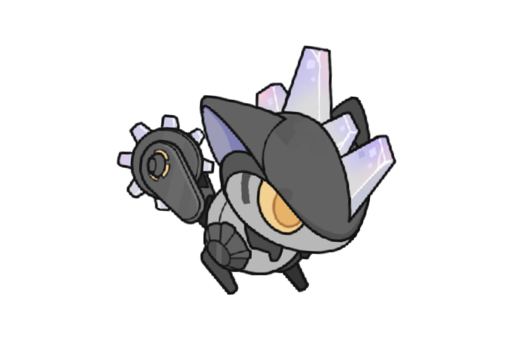
Con gốc monster_3374 (khung 0 idle): chỉ để so dáng, chỗ, cỡ từng mảnh
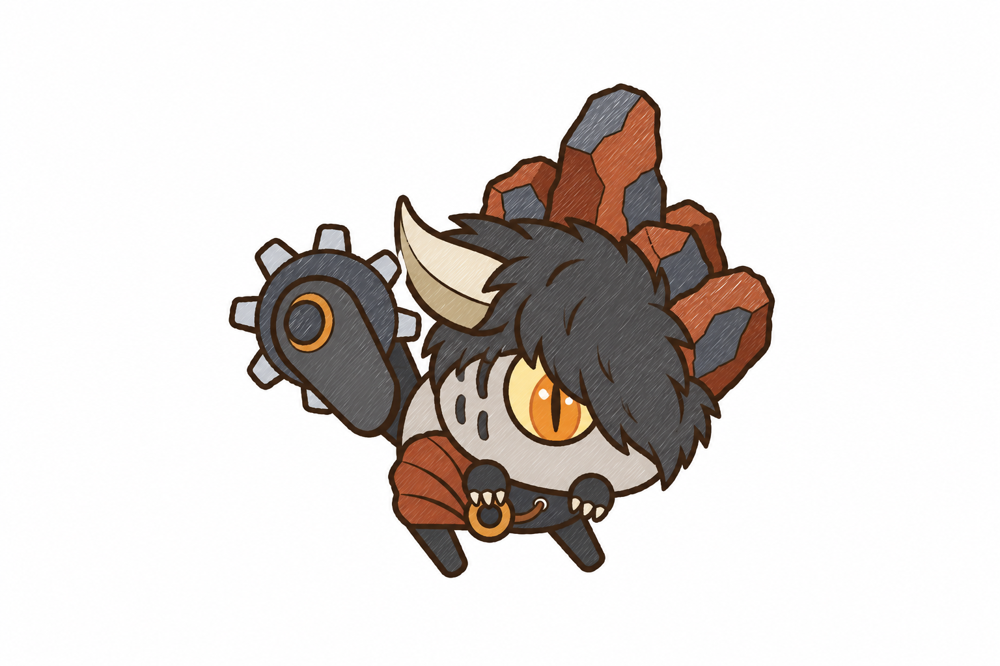
F bờm lông xù than chì, sừng ngà, cục quặng sắt gỉ đỏ sau đầu, đuôi than chì vòng trục gỉ
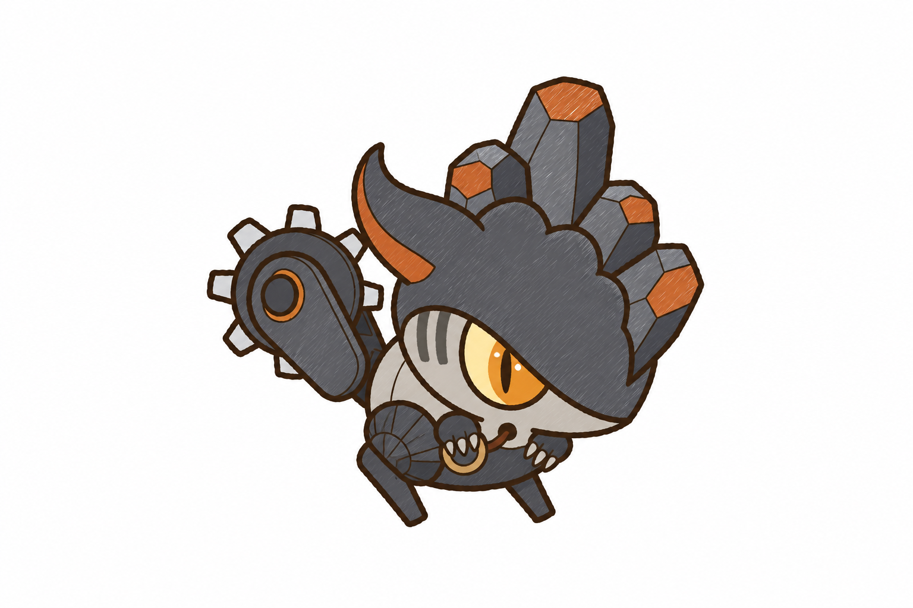
D mai đá sẫm mép vảy, sừng cong lót gỉ, quặng sắt dạng cột đầu gỉ cam, đuôi đá sẫm
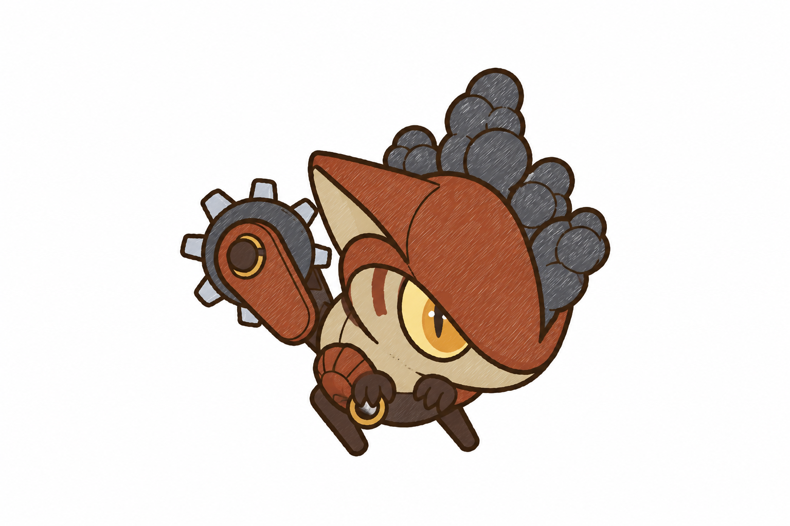
E mai nâu gỉ, sừng màu cát, quặng hematit dạng bong bóng, đuôi nâu gỉ vòng trục vàng
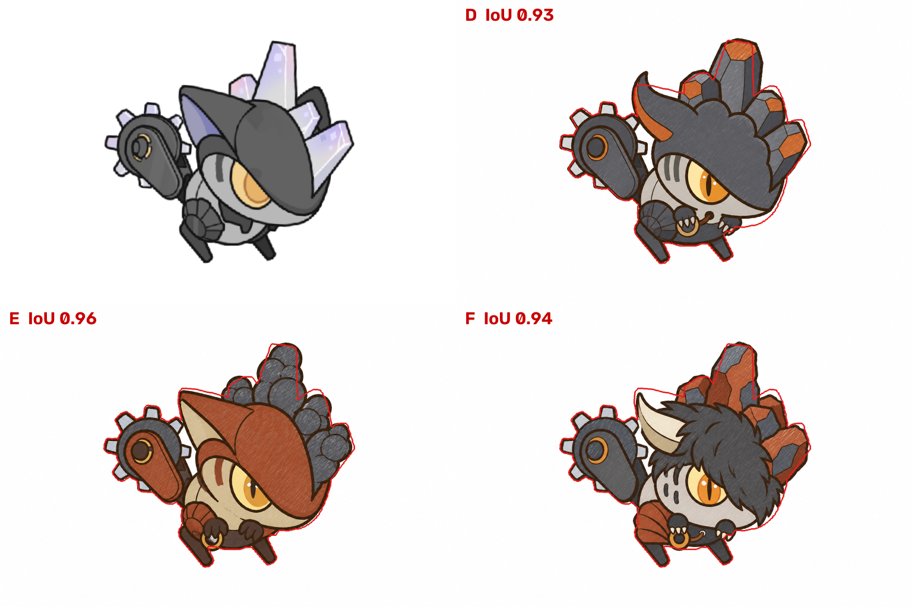
Viền đỏ = hình bóng con gốc chồng lên D, E, F (độ khớp 0,93 / 0,96 / 0,94)
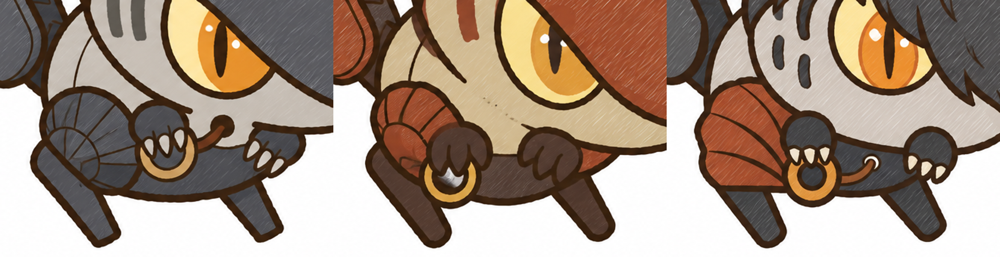
Cận dây giật (D, E, F): F đúng (vòng cầm dưới chân trái, dây chui vào lỗ ở bụng); D có lỗ dây sát cằm, nhìn như cái miệng; E không thấy dây